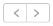

O separador Calendário permite ver clipes de vídeo e alarmes gravados para a(s) câmara(s) selecionada(s), com base no mês ou dia selecionado.
Clique no ícone  na parte superior da página para selecionar o mês anterior ou seguinte.
Com base na seleção, são apresentados os clipes e alarmes relevantes.
Clique no ícone na parte superior da página para selecionar as datas anteriores ou seguintes.
Com base na seleção, são apresentados os clipes e alarmes relevantes na cronologia apresentada no painel esquerdo.
Anterior Detalhes do perfil
Seguinte Gerir mapas